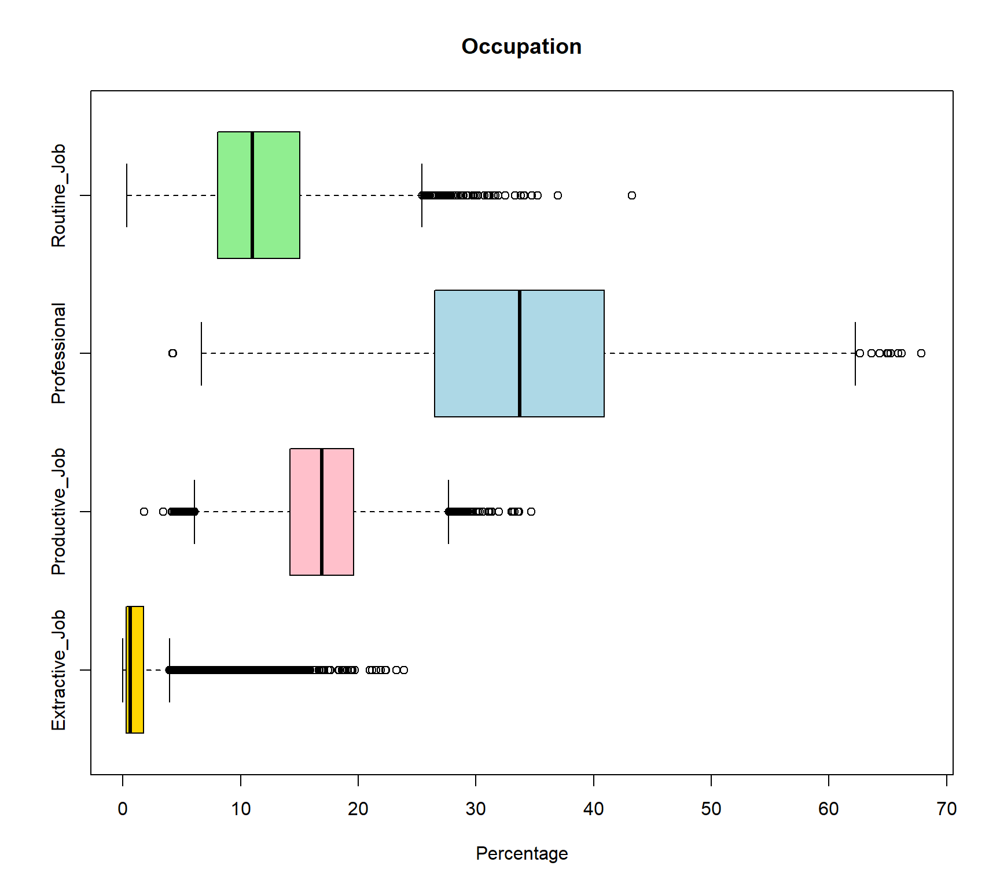
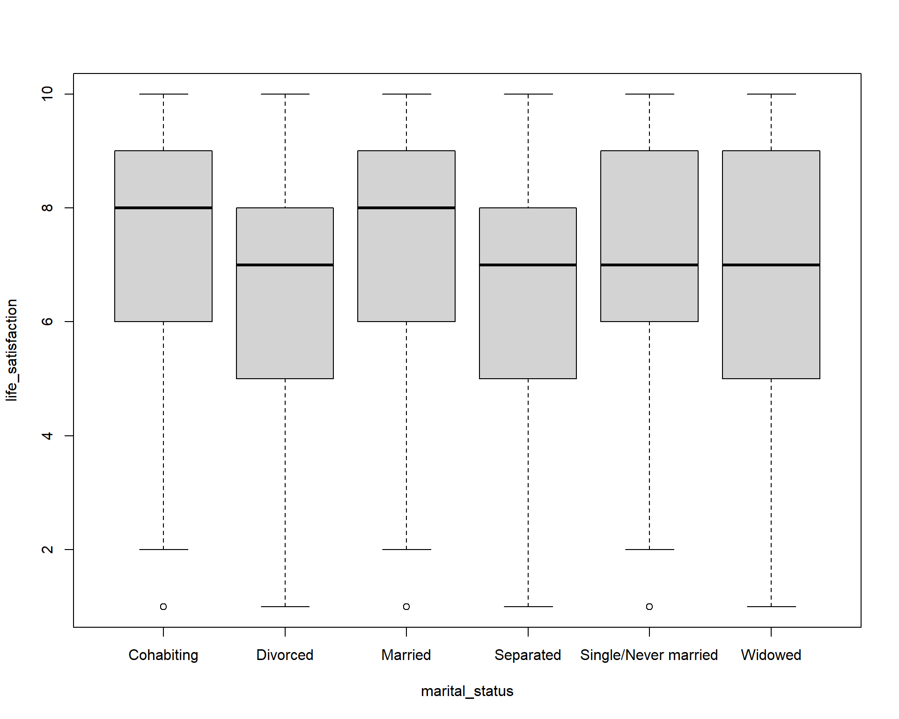
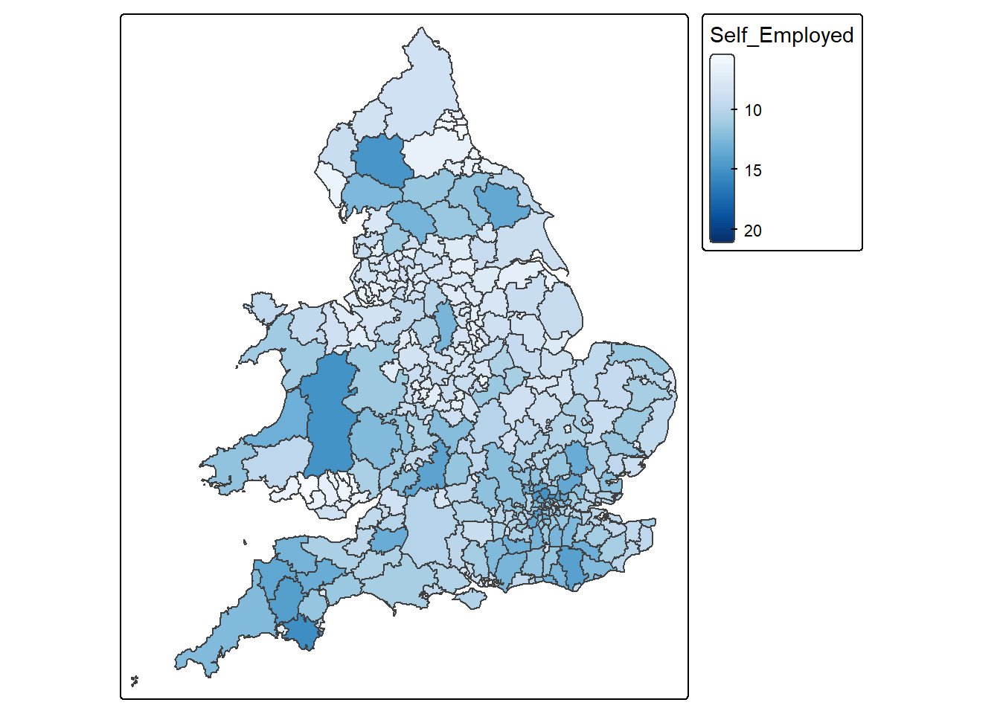
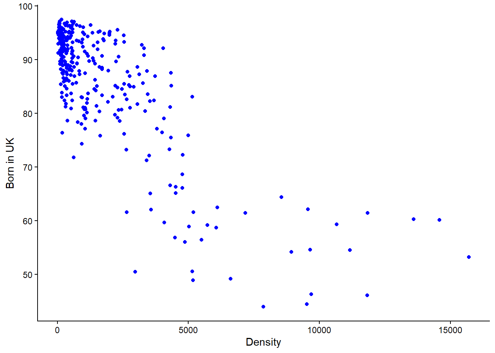
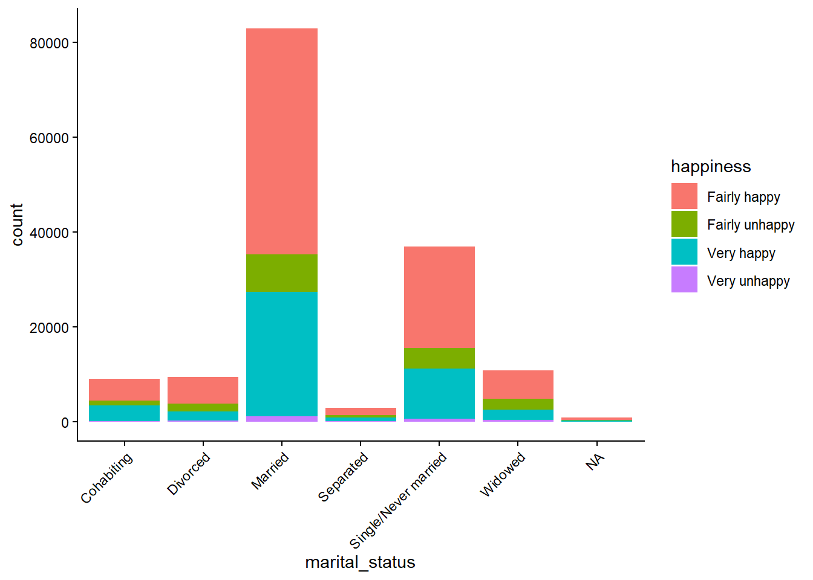
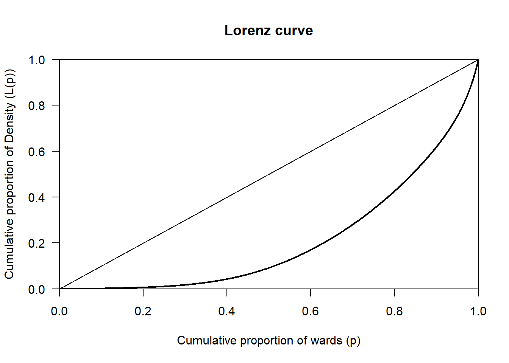

rm(list = ls())7 Mock questions
8 Mock Test
Before starting it’s good to get some of the preliminary steps taken care of first. In this case, we first download the data, and then clear the workspace to get rid of older variables that may be in our environment area since last working with RStudio. Finally, we import the libraries that we will be using.
8.1 Data download
Some of the datasets on Canvas have been updated, so please re-download the data.
world_value_survey - Located in Week 3
LAD December 2021 EW BUC.geojson - Located in Week 4
Census_2021_Wards.csv - Located in Week 4
Census_2021_Districts.csv - Located in Week 4
8.2 Clear the workspace
This is important because you could be using an older dataset that is incorrect if you don’t do this.
8.3 Load libraries
These are the libraries that will use be using for the mock test. The specific libraries to be loaded will depend on the specific task to be completed. However, these are the most common ones.
library(tidyverse)
library(sf)
library(tmap)
library(ineq)This mock exam consists of a series of 25 questions. Many of these questions are from the labs, so be sure to go through these before the final exam. Your final exam will have 20 questions and will be multiple choice. Unless told otherwise in the exam, you will be expected to write code (i.e., copy and paste from labs and modify accordingly) to derive results, which you will then use to determine to correct answer from a set of multiple choice options. You are not expected to write code from scratch.
8.4 Question 1
Write code to load the world_value_survey.csv dataset into RStudio. How many rows and columns does this dataset have?
Solution
# use read.csv to load a CSV file
world_value <- read.csv("world_value_survey.csv",stringsAsFactors = TRUE)
# dimension of a dataframe
dim(world_value)[1] 153009 49Use dim() to get the dimension of a dataframe. The answer is 153009 rows and 49 columns.
8.5 Question 2
Write code to load the Census_2021_Wards.csv dataset into RStudio. Calculate the total sum of the variable Worker across all wards in the dataset.
Solution
# use read.csv to load the CSV file
wards <- read.csv("Census_2021_Wards.csv",stringsAsFactors = TRUE)
#sum up the variable
sum(wards$Worker)[1] 27773832Use sum() to get the total counts. The answer is 127,773,832 workers in all wards.
8.6 Question 3
Find the min value of variable Density in the Wards dataset without code.
Solution
Click the dataset name "wards" in the Environment pane to open the Data Viewer, then click the Density column header to sort in ascending order and the top value is the min value of variable Density.Click on the data table containing the variable in the Environment pane to the right of the screen in RStudio. A new window should open up with the table. Next, navigate to the the specific variable in the table and click on it’s name. Usually, clicking on the name the first time will sort the variable in ascending order, and clicking again will sort the variable in descending order. Just beware of the ordering. In ascending order the smallest value will be at the top of the column. It’s similar to operation in Microsoft Excel.
8.7 Question 4
Write code to identify the ward with the min value for the for the variable Mean_Age using the Census_2021_Wards dataset.
Solution
# Load the data
wards <- read.csv("Census_2021_Wards.csv",stringsAsFactors = TRUE)
#slice the dataframe by the row with min value in the variable
wards %>% slice(which.min(Mean_Age)) WD21CD Ward_name District County Region Super_Region
1 E05013106 Holywell (Oxford) Oxford Oxfordshire South East South East
Country Population Worker Density Mean_Age Age_0_to_19 Age_20_to_29
1 England 6046 770 3571.6 22.12483 40.71133 52.44003
Age_65_plus Female Married Cohabiting Same_Sex_Couple In_Migrant_UK
1 0.4962779 49.78498 30.66038 14.15094 1.886792 38.94127
In_Migrant_Overseas Born_in_UK Born_in_EU White_British_Irish No_Religion
1 10.93466 71.32219 9.945391 59.74198 63.52647
Christian Communal_Resident Lone_Parent_family Household_5_plus Detached
1 27.46978 95.84849 9.482759 5.128205 4.237288
Flats One_Bedroom Crowded_Housing Owned Social_Rented Private_Rented
1 67.79661 32.45614 48.27586 2.586207 31.89655 65.51724
Second_Address_UK Second_Address_Overseas Disabled Poor_Health
1 72.37843 13.34767 14.58816 5.97089
Unpaid_Care_Provider No_Central_Heating Green_Central_Heating
1 2.65384 2.542373 8.474576
Part_Time_Employee Full_Time_Employee Self_Employed Unemployed Student
1 0.6180057 3.891765 0.2672457 0.08351428 94.154
No_Quals Degree_plus Extractive_Job Productive_Job Professional Routine_Job
1 0.7849031 23.66399 0.2597403 1.818182 4.223706 0.3171953
Cars_2_plus Work_from_Home Public_Transport
1 11.2069 546 5.045278#or sort the dataframe by the variable, return the top 1
wards %>% arrange(Mean_Age) %>% head(1) WD21CD Ward_name District County Region Super_Region
1 E05013106 Holywell (Oxford) Oxford Oxfordshire South East South East
Country Population Worker Density Mean_Age Age_0_to_19 Age_20_to_29
1 England 6046 770 3571.6 22.12483 40.71133 52.44003
Age_65_plus Female Married Cohabiting Same_Sex_Couple In_Migrant_UK
1 0.4962779 49.78498 30.66038 14.15094 1.886792 38.94127
In_Migrant_Overseas Born_in_UK Born_in_EU White_British_Irish No_Religion
1 10.93466 71.32219 9.945391 59.74198 63.52647
Christian Communal_Resident Lone_Parent_family Household_5_plus Detached
1 27.46978 95.84849 9.482759 5.128205 4.237288
Flats One_Bedroom Crowded_Housing Owned Social_Rented Private_Rented
1 67.79661 32.45614 48.27586 2.586207 31.89655 65.51724
Second_Address_UK Second_Address_Overseas Disabled Poor_Health
1 72.37843 13.34767 14.58816 5.97089
Unpaid_Care_Provider No_Central_Heating Green_Central_Heating
1 2.65384 2.542373 8.474576
Part_Time_Employee Full_Time_Employee Self_Employed Unemployed Student
1 0.6180057 3.891765 0.2672457 0.08351428 94.154
No_Quals Degree_plus Extractive_Job Productive_Job Professional Routine_Job
1 0.7849031 23.66399 0.2597403 1.818182 4.223706 0.3171953
Cars_2_plus Work_from_Home Public_Transport
1 11.2069 546 5.045278The above provides two ways to get the row with min value in Mean_Age from dataset wards. The answer is Holywell in Oxford.
8.8 Question 5
Write code to compute the overall proportion of workers who work from home (variable: Work_from_Home) to the total works (variable: Worker) in the Census_2021_Wards dataset.
Solution
# Load the data
wards <- read.csv("Census_2021_Wards.csv",stringsAsFactors = TRUE)
# Compute the overall proportion
sum(wards$Work_from_Home) / sum(wards$Worker)[1] 0.3122281We first calculate the sum of variable Work_from_Home, then divide it by the sum of variable Worker. The answer is 31.2%
8.9 Question 6
Write code to generate a statistical summary of the variable Social_Rented using the Census_2021_Wards.csv dataset. From the output, identify and report the mean value of Social_Rented.
Solution
# Load the data
wards <- read.csv("Census_2021_Wards.csv",stringsAsFactors = TRUE)
# get a statistical summary of one variable
summary(wards$Social_Rented) Min. 1st Qu. Median Mean 3rd Qu. Max.
0.4677 7.9926 12.6332 15.2696 19.9193 75.3656 #for mean only
mean(wards$Social_Rented)[1] 15.26956Use summary() to get a statistical summary of one variable. Use mean(), median(), min(), max() to get specific statistical results. Bonus: try fivenum() to see what you can get? Learn it by using ?fivenum yourself. The answer of this one is 15.27.
8.10 Question 7
Write code to produce a frequency table of the variable religion using the world_value_survey dataset. How many correspondents have a religion type of “Muslim”? What is the proportion of that to the whole survey sample?
Solution
# Load the data
# Load the data
world_value <- read.csv("world_value_survey.csv",stringsAsFactors = TRUE)
#get a frequency table
data.frame(table(world_value$religion)) Var1 Freq
1 Buddhist 5594
2 Christian - Catholic 32275
3 Christian - Orthodox 18296
4 Christian - Other 3010
5 Christian - Protestant 16677
6 Hindu 2025
7 Jew 281
8 Muslim 30081
9 None 40702
10 Other 2657#get a frequency table along with proportion
world_value %>%
count(religion) %>%
mutate(pct = round(n / sum(n) * 100,1)) religion n pct
1 Buddhist 5594 3.7
2 Christian - Catholic 32275 21.1
3 Christian - Orthodox 18296 12.0
4 Christian - Other 3010 2.0
5 Christian - Protestant 16677 10.9
6 Hindu 2025 1.3
7 Jew 281 0.2
8 Muslim 30081 19.7
9 None 40702 26.6
10 Other 2657 1.7
11 <NA> 1411 0.9Same as we’ve done in Lab 2, we can very easily get the frequency of categorical variable by using table(), data.frame(table()) would present the frequency in a dataframe table format. But to get the proportion along with the frequency, we use count() and then mutate() a new column called pct for the percentage of each count of category to the total sample. The answer is: 30,081 respondents report themselves as Muslim in the religion, which accounts for 19.7% of the total sample.
8.11 Question 8
Write code to create boxplots of variable Extractive_Job, Productive_Job, Professional, Routine_Job using the Census_2021_Wards dataset. Based on your plotst, which variable shows the most positively skewed distribution? (Recall: a positively skewed boxplot has a longer upper whisker and the median positioned closer to the lower quartile.) How to interpret the result?
Solution
# Load the data
wards <- read.csv("Census_2021_Wards.csv",stringsAsFactors = TRUE)
# boxplot comparing serveral variables
boxplot(
wards[, c("Extractive_Job",
"Productive_Job",
"Professional",
"Routine_Job")],
horizontal = TRUE,
main = "Occupation",
xlab = 'Percentage',
col = c("gold", "pink", "lightblue", "lightgreen")
)
The wards[, c("Extractive_Job", "Productive_Job", "Professional", "Routine_Job")] selected these four variable from the large raw dataframe. boxplot() then only plot boxplots for these four variables, and col = c() assigned four colors to each of these four variable with the same order of the variables. Since all these four variables are in percentage format so they are comparable. The Extractive_Job variable shows the strongest positive skewness as the median (black line in the box) positioned closer to the lower quartile. This can be interpret as most wards have relatively low proportions of extractive employment. In addition, there are more outliers on the right-hand side of the distribution, suggesting that while most areas have relatively low proportions of extractive employment, a small number of areas have markedly higher percentages. This creates a long upper tail and indicates that extractive-sector employment is highly concentrated in a limited number of locations rather than being evenly distributed across areas. The answer is extractive_job. But try to interpret other vairables from their boxplots by yourself.
8.12 Question 9
Write code to compute mean and standard deviation of variables Disabled and Poor_Health in the Census_2021_Wards.csv dataset in R. Compare and interpret the results for both variables
Solution
# Load the data
wards <- read.csv("Census_2021_Wards.csv",stringsAsFactors = TRUE)
# Compute results for Disabled
#mean value
mean(wards$Disabled)[1] 17.95851#standard deviation
sd(wards$Disabled)[1] 4.004337# Compute results for Poor_Health
#mean value
mean(wards$Poor_Health)[1] 18.25309#standard deviation
sd(wards$Poor_Health)[1] 4.245609The mean proportion of residents reporting disability across wards is 17.96% (SD = 4.00), while the mean proportion reporting poor health is slightly higher at 18.25% (SD = 4.25). This indicates that, on average, the prevalence of poor health is marginally greater than that of disability, although the difference between the two measures is small. The standard deviations are also similar, suggesting comparable levels of variation between wards for both indicators, with poor health exhibiting slightly greater dispersion. Overall, the results imply that the two variables follow broadly similar distributions across areas in terms of both central tendency and variability, indicating a consistent spatial pattern in the prevalence of disability and poor health at the ward level.
8.13 Question 10
Write code to compare the life satisfaction (variable: life_satisfaction) between different marital status (variable: marital_status) using the world_value_survey.csv dataset using boxplots. Interpret the findings?
Solution
# Load the data
world_value <- read.csv("world_value_survey.csv",stringsAsFactors = TRUE)
table(world_value$marital_status)
Cohabiting Divorced Married
9055 9394 83016
Separated Single/Never married Widowed
2848 36932 10859 boxplot(life_satisfaction ~ marital_status,
data = world_value)
As we did in Lab 2, we can create boxplot between categorical variable to compare a numerical variable. Here it is the life_satisfaction ~ marital_status. Using the knowlege of boxplot, we can learn that :
The median life satisfaction (thick black line in each box) is highest for Married and Cohabiting individuals (around 8), and slightly lower for Divorced, Separated, Single/Never married, and Widowed (around 7). This suggests that married or cohabiting people report higher life satisfaction on average.
The interquartile range (IQR) — the height of the box — is similar across groups (roughly 5–8), indicating moderate variation in life satisfaction within each marital status. Divorced and Separated groups show slightly wider spread toward lower values, indicating more variation among individuals.
Most boxes are roughly symmetric, but Divorced and Separated groups have medians closer to the upper quartile, suggesting a slight negative skew (more respondents at lower satisfaction scores).
Small dots below the whiskers indicate outliers with unusually low life satisfaction. Outliers show that a few individuals in each group report very low life satisfaction compared to the majority.
Overall, Marriage and cohabitation are associated with higher life satisfaction. Being divorced or separated is associated with slightly lower satisfaction and greater variability. Single or widowed individuals are in the middle range.
8.14 Question 11
The age in the real world is always a normal distribution. We assume that the age in the World Value Survey is also normal distribution. Write code to calculate the mean and standard deviation of age using the world_value_survey.csv dataset. Based on your output, use the 68-95-97.5 rule to interpret the result.
Solution
# Load the data
world_value <- read.csv("world_value_survey.csv",stringsAsFactors = TRUE)
#mean value, na.rm=TRUE to remove the NA value in variable
mean(world_value$age,na.rm = TRUE)[1] 45.3941#standard deviation
sd(world_value$age,na.rm = TRUE)[1] 17.16702The mean age represents the central tendency of the sample, indicating the average age of individuals included in the dataset. The mean age of the sample is 45.4 years, suggesting that the average respondent is in their mid-forties. The standard deviation (17.2 years) indicates the variability in age within the sample, with a relatively large value implying substantial heterogeneity in ages. Assuming an approximately normal distribution, about 68% of respondents are expected to fall within one standard deviation of the mean (approximately 28.2 to 62.6 years), about 95% within two standard deviations (approximately 11.0 to 79.8 years), and about 99.7% within three standard deviations (approximately −6.2 to 97.0 years). Since negative ages are not meaningful, the lower bound would effectively be truncated at zero, but the calculation still illustrates the wide spread of ages in the dataset.
8.15 Question 12
Write code to compute the standard error of the mean proportion for work status as Housewife. (variable: work_status, category: Housewife) across all observations in the World Value Survey dataset (world_value_survey.csv). What is the approximate result?
Solution
# Load the data
world_value <- read.csv("world_value_survey.csv",stringsAsFactors = TRUE)
# sample size
n = nrow(world_value)
n[1] 153009# Sample mean proportion
p_hat = mean(world_value$work_status == "Housewife",na.rm = TRUE)
p_hat[1] 0.1029774# Standard Error for a proportion
SE_p <- sqrt(p_hat * (1 - p_hat) / n)
SE_p[1] 0.0007769877Recap the equation of Standard Error for a proportion:

Therefore, we need first get the n as the sample size, here it is 153009. We then need the p-hat which is the mean proportion of our sample: 10.3%. This indicates that approximately 10.30% of respondents have a work status classified as Housewife. Because our sample size is very large, the standard error is extremely small (less than 0.001).
8.16 Question 13
Write code to compute the mean value and 95% confidence interval of the life_satisfaction variable in the World Value Survey (world_value_survey.csv).
Solution
# Load the data
world_value <- read.csv("world_value_survey.csv",stringsAsFactors = TRUE)
#CI windows
lifeSatis <- na.omit(world_value$life_satisfaction)
#sample size
n <- length(lifeSatis)
n[1] 152372#sample mean
m <- mean(lifeSatis)
m[1] 7.224746#sample standard deviation
std <- sd(lifeSatis)
std[1] 2.146217#standard error
se <- std/sqrt(n)
se[1] 0.005498207error <- qnorm(0.975)*se
#CI window
lower.bound <- m-error
upper.bound <- m+error
lower.bound[1] 7.21397upper.bound[1] 7.235522The CI of numerical variable should be calculated as  . It is easy to get sample mean m, but for the Standard Error
. It is easy to get sample mean m, but for the Standard Error , we need standard deviation sd and sample size n.
, we need standard deviation sd and sample size n.
Therefore, in above code, we get sample size n = 152372, sample mean m = 7.22, sample standard deviation sd = 2.15, then the Standard Error (SE) can be calculated by error <- qnorm(0.975)*std/sqrt(n) as the se = 0.0055.
The CI window are computed by sample mean +/- qnorm(0.975)*Standard Error .
We can interpret the outputs as: The mean life satisfaction score in the sample is 7.22 (SD = 2.15) based on 152,372 respondents. The relatively large standard deviation indicates substantial variation in life satisfaction across individuals. However, the standard error is very small (0.0055) due to the large sample size, resulting in a narrow 95% confidence interval ranging from 7.214 to 7.236. This suggests that the true population mean life satisfaction is very likely to lie within this interval, indicating a high level of precision in the estimate.
8.17 Question 14
Write code to produce a cross-tabulation of settlement type (variable: settlement_type) by how they feel related to the world (variable: relate_to_world) using the world_value_survey.csv dataset. According to your table,
Based on your results, which type of settlement has the highest mean proportion of feeling very close to the world?
Solution
# Load the data
world_value <- read.csv("world_value_survey.csv",stringsAsFactors = TRUE)
# create a cross tabulation table
tab = table(world_value$settlement_type, world_value$relate_to_world)
# convert the table into proportion format by each row as 100%
round(prop.table(tab, margin = 1) * 100, 1)
Close Not close at all Not very close Very close
City (pop. 500k+) 31.9 15.0 36.1 17.0
Hamlet (pop. <5k) 31.1 18.6 31.1 19.2
Large town (pop. 100k-500k) 33.7 14.6 35.6 16.1
Small town (pop. 20-100k) 32.6 15.3 35.7 16.3
Village (pop. 5-20k) 32.1 17.4 33.1 17.5#make the table as a dataframe for further handling
result = round(prop.table(tab, margin = 1) * 100, 1) %>% as.data.frame.matrix()
result Close Not close at all Not very close Very close
City (pop. 500k+) 31.9 15.0 36.1 17.0
Hamlet (pop. <5k) 31.1 18.6 31.1 19.2
Large town (pop. 100k-500k) 33.7 14.6 35.6 16.1
Small town (pop. 20-100k) 32.6 15.3 35.7 16.3
Village (pop. 5-20k) 32.1 17.4 33.1 17.5#return the max value in column Do not trust at all
result %>% slice(which.max(`Very close`)) Close Not close at all Not very close Very close
Hamlet (pop. <5k) 31.1 18.6 31.1 19.2As we did in Lab 3, we use table() for a cross tabulation of two categorical variables to get the frequency table. Then convert the frequency table into a proportion one in prop.table(): margin = 1 when we need the row sum up to 100%; margin = 2 when we wish the column sum up as 100%. To get the max or min value or any further data analysis, we convert the proportion table as a dataframe by %>% as.data.frame.matrix(), rounded all the digits to only 1 by using round( ,.1) . Same as Q1.4, we use slice(which.max()) to return the row with the highest value in Very close. Noted: for column names with space like this one, we use `` of the column name when we need to use it. Therefore here use see Very close are quoted in ’’. The answer is Hamlet with population less than 5k shows highest proportion of feel themselves very close to the world in our survey sample. Are you surprised by this result?
8.18 Question 15
What is the Standard Error of samples? With the increase of sample, how will Standard Error change?
Solution
The Standard Error (SE) measures how much a sample statistic, such as a mean or proportion, is likely to vary from one sample to another. It provides an estimate of the precision of the sample statistic. For example, the SE of a mean is calculated by dividing the standard deviation of the sample by the square root of the sample size:, while the SE of a proportion is calculated using the formula 
As the sample size increases, the standard error decreases. This is because larger samples provide more information about the population, making the estimate more precise. Therefore, increasing the number of observations reduces sampling variability and gives greater confidence that the sample statistic is close to the true population value.
8.19 Question 16
You are required to write code to combine two datasets, LAD December 2021 EW BUC.geojson and Wards_2021_Districts.csv, using a left join. Both datasets contain a common variable called LAD21CD, which is the unique code assigned by the Office for National Statistics (ONS) to each local authority district in the 2021 Census. This variable should be used to match the two datasets correctly. After joining the datasets, use the combined data to create a map showing the percentage of self-employed people at the district level across the UK.
Solution
# Load the data
district_map <- st_read("LAD December 2021 EW BUC.geojson")Reading layer `LAD December 2021 EW BUC.geojson' from data source
`C:\Users\jsmith\OneDrive - George Mason University - O365 Production\Documents\quant\labs\LAD December 2021 EW BUC.geojson'
using driver `GeoJSON'
Simple feature collection with 331 features and 1 field
Geometry type: MULTIPOLYGON
Dimension: XY
Bounding box: xmin: -6.360297 ymin: 49.88234 xmax: 1.763571 ymax: 55.8112
Geodetic CRS: WGS 84districts <- read.csv("Census_2021_Districts.csv",stringsAsFactors = TRUE)
# Join the datasets
joined_map <- left_join(district_map, districts, by = "LAD21CD")
# Map variable
map <-
tm_shape(joined_map) +
tm_polygons(
fill = "Self_Employed",
fill.scale = tm_scale_continuous(values = "Blues")
)
# Display map
map[cols4all] color palettes: use palettes from the R package cols4all. Run
`cols4all::c4a_gui()` to explore them. The old palette name "Blues" is named
"brewer.blues"
Multiple palettes called "blues" found: "brewer.blues", "matplotlib.blues". The first one, "brewer.blues", is returned.
8.19.0.1
8.20 Question 17
Write code to create a scatterplot showing the relationship between the variables Density and Born_in_UK using the Census_2021_Districts.csv dataset. Make sure that Density is shown on the x-axis and Born_in_UK is shown on the y-axis.
Solution
# Load the data
districts <- read.csv("Census_2021_Districts.csv",stringsAsFactors = TRUE)
# Create scatterplot
districts %>%
ggplot() +
geom_point(aes(x = Density, y = Born_in_UK), colour = "blue") +
labs(x = "Density", y = "Born in UK") +
theme_classic()
IMPORTANT: Notice in the above line of code, “x = Density, y = Born_in_UK” , this is where you specify what goes on the x and y axis respectively. If the code was “x = Born_in_UK, y = Density” then you would be plotting Born_in_UK on the x-axis with Density on the y-axis.
8.21 Question 18
Write code to calculate the appropriate correlation coefficient between the variables Mean_Age and Poor_Health using the Census_2021_Wards.csv dataset. Please also interpret what the resulting value mean.
Solution
Remember the steps: Check whether the variables are numerical or categorical > If numerical check for skewness > If both variables have minor or no skew then choose Pearson’s r, otherwise it’s Spearman’s Rank correlation coefficient.
# Load the data
wards <- read.csv("Census_2021_Wards.csv",stringsAsFactors = TRUE)
# Check whether the data is of numerical or categorical type
view(wards)Viewing the table it is evident that both variables are of numeric type. In the case the correlation coefficient is either Pearson’s r or Speakman’s Rank
# Calculate skewness of variables
## Poor_Health
x <- wards$Poor_Health
x <- x[!is.na(x)]
mean((x - mean(x))^3) / sd(x)^3[1] 0.3433777## Mean_Age
x <- wards$Mean_Age
x <- x[!is.na(x)]
mean((x - mean(x))^3) / sd(x)^3[1] -0.1460047There is moderate skew in Poor_Health and minor skew in Mean_Age. Because both (not just one) numerical variables do not have minor or no skew, Spearman’s Rank correlation would be the appropriate measure to use here. Had both variables have minor or no skew, ONLY THEN would Pearson’s r correlation be appropriate.
cor(wards$Poor_Health,
wards$Mean_Age,
method = "spearman",
use = "complete.obs")[1] 0.2051147NOTE: While not asked as part of the question, a Spearman’s value of 0.2 would be interpreted as a weak association between Poor_Health and Mean_Age. More on interpreting the outputs on correlation can be found in Week 4 lab.
8.22 Question 19
Write code to create a barplot showing the relationship between the variables marital_status and happiness using the world_value_survey.csv dataset. What pattern(s) can be observed?
Solution
# Load the data
world_value <- read.csv("world_value_survey.csv",stringsAsFactors = TRUE)
# Plot the barplot
world_value %>%
ggplot() +
geom_bar(aes(x = marital_status, fill = happiness)) +
theme_classic() +
theme(
axis.text.x = element_text(angle = 45, hjust = 1)
)
Married people show the strongest association with being happy.
You can also see that most people report being happy regardless of marital status.
8.23 Question 20
When trying to understand the skewness of a variable, why is it important to use both visualisations and skewness metrics?
Solution
Visualisations provide qualitative insight into the distribution’s shape, structure, and outliers, while skewness metrics provide quantitative, objective measurement of asymmetry. Using both ensures accurate, reliable, and complete understanding of the variable’s distribution, reducing the risk of misinterpretation.
8.24 Question 21
Write code to calculate the Gini coefficient between the variables Poor_Health using the Census_2021_Wards.csv dataset. Be sure to not include an NA values. Please also interpret what the resulting value mean.
# Load the data
wards <- read.csv("Census_2021_Wards.csv",stringsAsFactors = TRUE)
# Compute Gini value
Gini( wards$Poor_Health, na.rm = TRUE )[1] 0.131253NOTICE: In the above code “na.rm = TRUE” removes NA values before the Gini value is computed. This is important as these values can lead to misleading or incorrect results. Also remember that Gini coefficient measures the level of inequality in a distribution of a variable and when interpreting results, values range from 0 (perfect equality) to 1 (perfect inequality).
A Gini coefficient of 0.131 for poor health indicates low spatial inequality in the distribution of poor health across wards.
8.25 Question 22
Compute the Spearman’s rank correlation coefficient between the numeric variable Self_Employed (equivalent net pay) and the other numeric variables in the Census_2021_Wards.csv dataset, along with their associated p-values. Based on your results, interpret what do they mean in the context of the association between Self_Employed and Married and its p-value?
Solution
In the code below, the only things that will be changing is the information in PART 1 and PART 2. So if you were asked a similar question in the exam, you would copy the entire piece of code but only change that data to be loaded, the variable of interest, and the correlation method you want to use. The other part of the code should remain unchanged and it’s not expected that you will have to memorise it or write it from scratch.
# PART 1: Load the data
data <- read.csv("Census_2021_Wards.csv",stringsAsFactors = TRUE)
# PART 2: Input your variable of interest and correlation method
# The variable that you want as your main achor
variable_of_interest = "Self_Employed"
# This is the correlation method that will be used
correlation_method = "spearman" # or use "pearson" to compute the Pearson correlation coefficient.
#---------------------------------------------------------------------------------------------------------
# PART 3: Compute the correlation coefficients and associated p-values
# This other part of the code takes the variable of interest and correlation method and does the computation.
# Ensure anchor exists and is numeric
correlations_with_pvalue <-
data %>%
# keep only numeric columns
select(where(is.numeric)) %>%
# pivot all numeric columns except the anchor into long format
pivot_longer(
cols = -all_of(variable_of_interest),
names_to = "Variable",
values_to = "x"
) %>%
group_by(Variable) %>%
summarise(
rho = cor(x, .data[[variable_of_interest]],
method = correlation_method,
use = "pairwise.complete.obs"),
p_value = cor.test(x, .data[[variable_of_interest]],
method = correlation_method,
exact = FALSE)$p.value,
sig = p_value <= 0.05,
.groups = "drop"
) %>%
arrange(desc(abs(rho))) %>%
mutate(
rho = round(rho, 2),
p_value = round(p_value, 4)
)
# PART 4: View the output
View(correlations_with_pvalue)NOTICE: When you receive the output table you can columns in ascending or descending order by clicking the name of the column, just like you would when using Microsoft Excel.
The Spearman’s rank correlation coefficient between Self_Employed and Married is 0.49, indicating a moderate positive association. This suggests that wards with higher proportions of self-employed individuals tend to also have higher proportions of married residents. The p-value is less than 0.05, indicating that this relationship is statistically significant and unlikely to have occurred by chance. This finding suggests a meaningful association between self-employment and marital status at the ward level, potentially reflecting broader socio-economic and demographic patterns.
8.26 Question 23
Write code to plot the Lorenz curve for the variable Density using the Census_2021_Wards.csv dataset. Please interpret what the resulting value mean.
# Load the data
wards <- read.csv("Census_2021_Wards.csv",stringsAsFactors = TRUE)
# Draw the Lorenz curve
wards %>%
pull(Density) %>%
Lc() %>%
plot(
xlab = "Cumulative proportion of wards (p)",
ylab = "Cumulative proportion of Density (L(p))"
)
The Lorenz curve for Density shows a clear deviation from the line of perfect equality, indicating that density is unevenly distributed across wards. A relatively small proportion of wards accounts for a large share of total density, while most wards have comparatively low density. This pattern most likely reflects strong spatial concentration, consistent with urban areas having much higher density than suburban or rural wards.
8.27 Question 24
Write code to compute the skewness for the variable Density using the Census_2021_Wards.csv dataset. Please interpret what the resulting value mean.
Solution
Remember, while most skewness values for variables tend to fall within the range of-1 to +1, values can exist outside this range. Those out of this range are can be classed as highly skewed, or in some cases, extremely skewed.
# Load the data
wards <- read.csv("Census_2021_Wards.csv",stringsAsFactors = TRUE)
# Compute the skewness
x <- wards$Density
x <- x[!is.na(x)]
mean((x - mean(x))^3) / sd(x)^3[1] 2.375682The skewness value of 2.38 indicates that Density is highly positively skewed. This means that most wards have relatively low population density, while a small number of wards have extremely high density. This most likely reflects the spatial structure of urban systems, where dense urban centres contrast with less dense suburban and rural areas.
8.28 Question 25
In addition to the p-value, we can also calculate the confidence intervals for the correlation between two variables. Why are confidence intervals useful in this case?
Solution
Confidence intervals are useful because they show the range of values the true correlation is likely to fall within, rather than just saying whether a relationship exists. as in the case of the p-value.